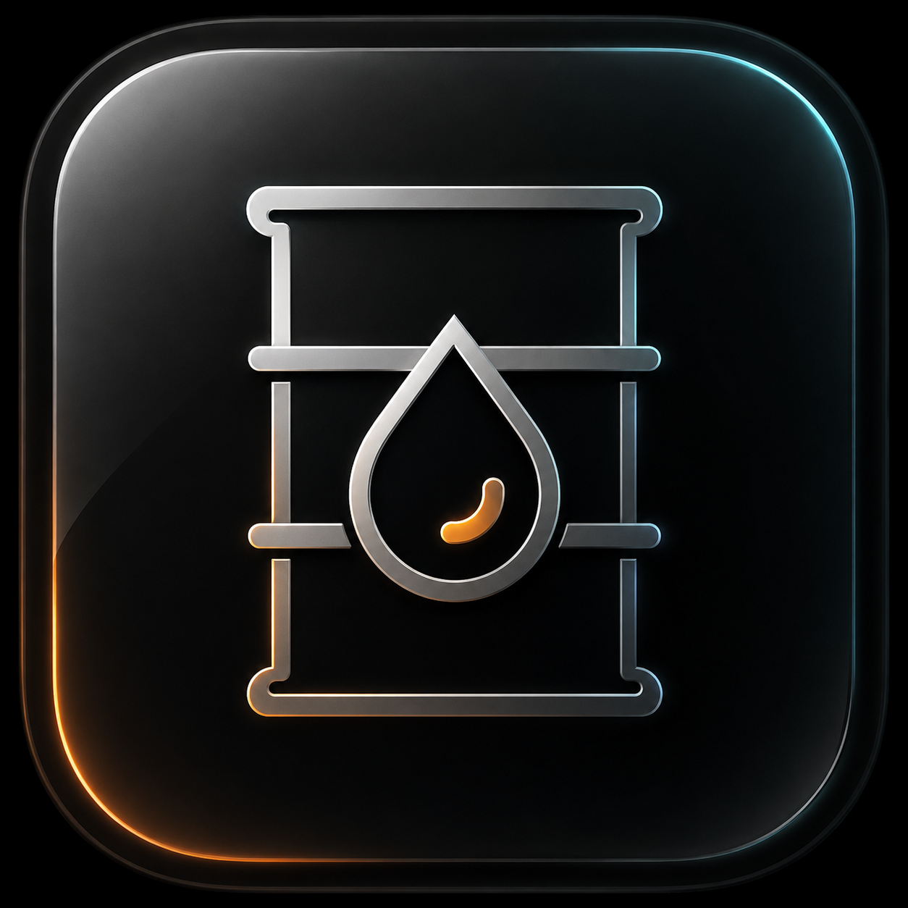

Doctrine Diamond entry, persistent cockpit shell, embedded modules, and Host Glass UI.
Local-first desktop beta
One encrypted cockpit for operational memory.
ROS keeps commands, notes, files, research, AI outputs, and project context together in a native desktop workspace. It is built for technical operators who need continuity without handing their working memory to a cloud dashboard.
Capture notes, commands, research, files, and model output into encrypted project context.
Ollama-ready workflows with model cards, deterministic context, citations, and manual capture.

Product loop
Capture, search, ask, save, resume.
The v2 beta is centered on preserving context. Create a project, capture useful artifacts, search the active project, ask a local model against deterministic context, then save the answer back into memory.
Current beta surfaces
The cockpit is the shell. Modules are depth.
Entry layer for Research, Signal, Utility, and Primary domains before opening the cockpit.
Security Model v1 / DNS-v1 shell, local model status, and saved model outputs.
Terminal v2 foundation for saving commands, outputs, and operational notes into project memory.
Structured research records, notes, library references, and project-linked search.
Screens
Serious local software, not fake system theater.


